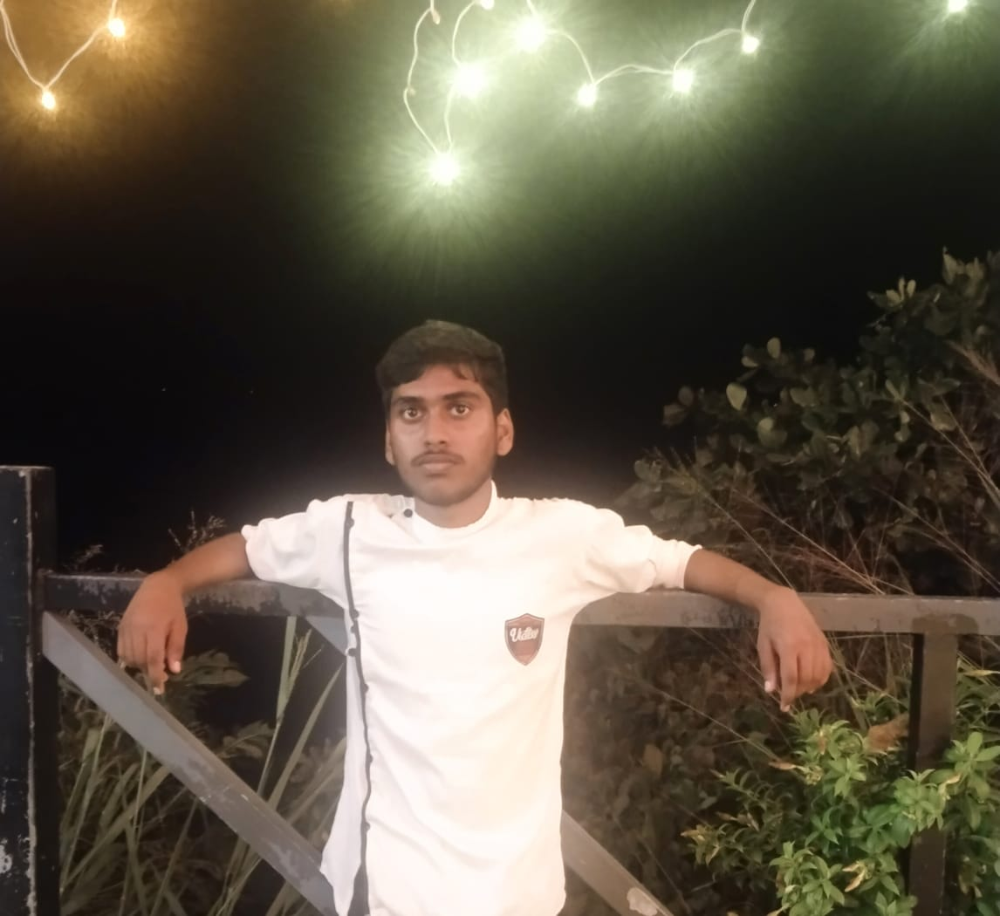

✨ About J.K.Lee ✨

I am a creative and ambitious person with a strong imagination 🧠🔥. I am deeply interested in anime, dark psychology, and powerful characters with complex minds. I am not just a consumer of stories I am a creator who writes novels and plans bigger visions like manga, anime, and even theatrical releases. I am loyal to my family and selective with trust 💚. I understand people’s intentions quickly and value honesty. I love nature, especially oak trees 🌳, the color green 💚, snow seasons ❄️, and Japan 🇯🇵. I dream big to become extremely successful, to stand above the ordinary, and to give back by helping poor children with my wealth. I am a human with ambition, vision, and depth. ✨ If I want, I can become anything ✨
-:My Life Story 📖:-
I was born 21 July 2005 In Small Village Called Elampillai, Tamil Nadu, India. My Father Name Is Mr.C.Sivaraj And My Mother Name Is Mrs.Bhuvaneshwari. I Have a Older Sister Named Padmasri. And, My Real Name is Jeevakkumar. From My Childhood I Am Very Passionate About Studying and Getting Good Score. I Used To Tell Small Stories to my Friends Like Spiderman, Batman Etc., During My School Days I Won't Participate In any Competitions And Events. I Completed My Schooling In G.B.Hrs,Sec,School, Elampillai.

My Beautiful Family At My 1st Year BirthDay 🎂

Me at My School Days
I am Good at Studying All Subject 📚. Until I Realise About This Cursed World 🌎. Because in School Colleges only Want to Learn About Something New No one Think About Something creating New ⚙️. After i Realise Abou Matrix Then Every Day I Afraid About Mylife Everyday Thinking Aboput Bussiness With No Inversement No Bussiness Idea. I Was Wasted My 2 Years of My School Life.
---First Disaster In My Life---
MY 10th Standard i get Very low Scores at Quarterly and Half-yearly Because I lost My Intrest in Studying. And Finally 2020 March 144 Lockdown Came so They Decided Mark from Calculation Of Quarterly and Half-yearly. so My Score is just 326/500. My Family Very Disappointed About My Score. After That I Decided To Change My Life. So I Decide To Study Maths Computer Science In My Higher Secondary. But I Can't Study Like My Elementry School Even I got Low Score at My 12th Final board Exam. I Just Scored 358/600. After That My Family Very Disappointed Again. My Life is Cooked 🍛.
---Second Disaster In My Life---
I Expected My college Life Will Maybe Happy But Everything Oposite in my Life. Whatever My School And College Life I got So many Best Friends For Forget My Sadness.😃
.png)

.png)